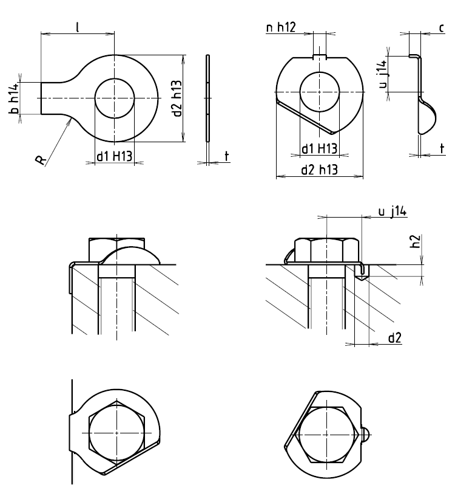

Příklad označení pozinkované ocelové podložky s nosem pro šroub M10:
PODLOŽKA ČSN 02 1751.05–10,5
Příklad označení mosazné podložky s jazýčkem pro šroub M4, bez úpravy povrchu:
PODLOŽKA ČSN 02 1753.80–4,3
| Matice | Společné | Podložky s nosem ČSN 02 1751 | Podložky s jazýčkem ČSN 02 1753 | |||||||||||
|---|---|---|---|---|---|---|---|---|---|---|---|---|---|---|
| d1 | d2 | b | l | R | t | Hmotnost [g] |
n | u | c | t | dz | hz | Hmotnost [g] |
|
| M3 | 3,2 | 10 | 4 | 13 | 2,5 | 0,35 ±0,03 | 0,282 | – | – | – | – | – | – | – |
| M3,5 | 3,7 | 11 | 4 | 13 | 2,5 | 0,35 ±0,03 | 0,321 | – | – | – | – | – | – | – |
| M4 | 4,3 | 13 | 5 | 14 | 2,5 | 0,35 ±0,03 | 0,429 | 2,5 | 5,5 | 2,1 | 0,3 ±0,02 | 3 | 2,5 | 0,320 |
| M5 | 5,3 | 17 | 6 | 16 | 2,5 | 0,5 ±0,03 | 1,03 | 3,5 | 7 | 2,5 | 0,5 ±0,03 | 4 | 3 | 0,8 |
| M6 | 6,4 | 18 | 7 | 18 | 4 | 0,5 ±0,03 | 1,07 | 3,5 | 7,5 | 2,5 | 0,5 ±0,03 | 4 | 3 | 0,845 |
| M8 | 8,4 | 22 | 8 | 20 | 4 | 0,8 ±0,05 | 2,50 | 3,5 | 9 | 3,6 | 0,8 ±0,03 | 4 | 4 | 2,000 |
| M10 | 10,5 | 26 | 10 | 22 | 6 | 0,8 ±0,05 | 3,36 | 4,5 | 10 | 4,6 | 0,8 ±0,03 | 5 | 5 | 2,760 |
| M12 | 13 | 30 | 12 | 28 | 10 | 1 ±0,06 | 5,75 | 4,5 | 12 | 5 | 1 ±0,04 | 5 | 6 | 4,450 |
| M14 | 15 | 32 | 12 | 28 | 10 | 1 ±0,06 | 6,20 | 4,5 | 13 | 5 | 1 ±0,04 | 5 | 6 | 4,467 |
| M16 | 17 | 36 | 15 | 32 | 10 | 1 ±0,06 | 7,90 | 5,5 | 15 | 5 | 1 ±0,04 | 6 | 6 | 6,1 |
| M18 | 19 | 40 | 18 | 36 | 10 | 1 ±0,06 | 9,95 | 6 | 17 | 5 | 1 ±0,04 | 6 | 6 | 7,54 |
| M20 | 21 | 42 | 18 | 36 | 10 | 1 ±0,06 | 10,4 | 6 | 18 | 5 | 1 ±0,04 | 6 | 6 | 8,1 |
| M22 | 23 | 45 | 20 | 42 | 10 | 1 ±0,06 | 12,4 | 7 | 20 | 5 | 1 ±0,04 | 6 | 6 | 9,69 |
| M24 | 25 | 50 | 20 | 42 | 10 | 1 ±0,06 | 14,3 | 7 | 21 | 6 | 1 ±0,04 | 7 | 7 | 11,3 |
| M27 | 28 | 58 | 23 | 48 | 16 | 1,5 ±0,1 | 29,0 | 8 | 23 | 9 | 1,5 ±0,04 | 10 | 10 | 22,8 |
| M30 | 31 | 68 | 26 | 52 | 16 | 1,5 ±0,1 | 34,2 | – | – | – | – | – | – | – |
| M33 | 34 | 68 | 28 | 56 | 16 | 1,5 ±0,1 | 39,4 | – | – | – | – | – | – | – |
| M36 | 37 | 75 | 30 | 60 | 16 | 1,5 ±0,1 | 47,4 | – | – | – | – | – | – | – |
| M39 | 40 | 82 | 32 | 64 | 16 | 1,5 ±0,1 | 56,0 | – | – | – | – | – | – | – |
1 Pojistné podložky s jazýčkem a pojistné podložky s nosem se vyrábějí
– z oceli 11 321.21, první doplňková číslice za číslem rozměrové normy 02 Úpravu povrchu stanoví druhá doplňková číslice za číslem rozměrové normy
0 bez úpravy povrchu
1 čistý povrch
2 černění
3 fosfátování
4 kadmiování
5 zinkování
6 niklování
7 mosazení
8 chromování
9 dle zvláštního ujednání